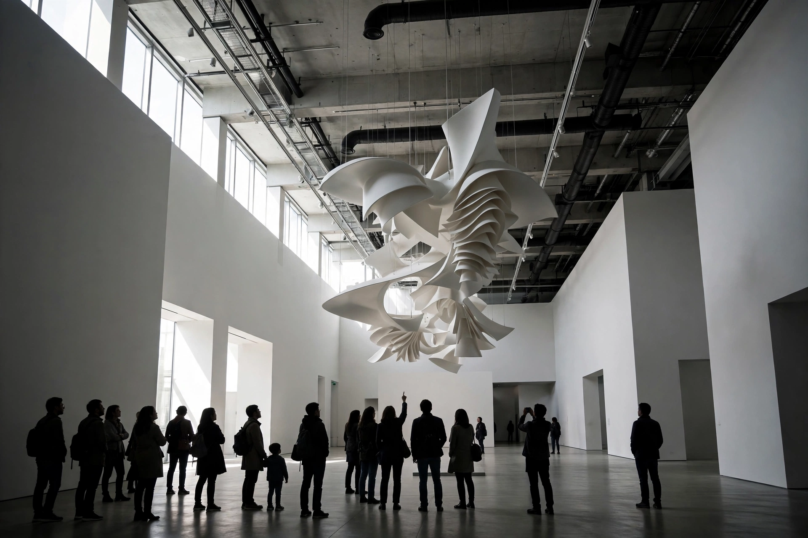

Contemporary art
From Wikipedia, the free encyclopedia

Contemporary art is the art of today, produced by artists living in the twenty-first century — or, in a broader institutional usage, art produced since the end of modernism around the 1960s–70s. It is characterised by a diversity of materials and methods, including Installation art, video, performance, Conceptual art and digitally native forms, and by engagement with themes of identity, globalisation, technology and ecology.
Definitions and periodisation
Museums draw the line differently: Tate Modern treats 'contemporary' loosely as art from the 1960s onwards, while many institutions reserve it for currently practising artists. The boundary with postmodernism is disputed; theorists such as Terry Smith argue contemporary art is defined less by style than by its global, networked condition after 1989.
Movements and practices
Since the 1960s, movements and tendencies grouped under contemporary art include Pop art's later phases, Minimalism, Conceptual art, Land art, appropriation, Neo-expressionism, the Young British Artists, Relational aesthetics, post-internet art and social practice. Biennials — Venice, Documenta, Istanbul, Gwangju — became the key global platforms.
Market and institutions
The contemporary art market is dominated by auction houses Christie's and Sotheby's and mega-galleries such as Gagosian, Hauser & Wirth and David Zwirner. Record prices include Salvator Mundi (US$450 million, 2017) for an old master, and among living artists, works by Jeff Koons and David Hockney. In 2021 the sale of Beeple's Everydays NFT for US$69 million signalled the arrival of crypto-art — followed by a sharp market correction.